1. 当萨克森人成为罗马人
维也纳霍夫堡宫博物馆第十展室，灯光略显昏暗，各类哈布斯堡遗存的宝器让这里显得多少有些色域不明。一顶镶满各色珠宝的皇冠静静躺在玻璃钟罩内，无言诉说它的昔日荣耀。这顶皇冠铸造于960年，它的第一个佩戴者是来自马格德堡的奥托一世。如今一千多年过去了，皇冠下的高贵头颅早已泯然于历史的烟尘，但是这顶皇冠上的璀璨珠宝依然闪着温润的光芒，传递着罗马教皇约翰内斯十二世指尖的温暖。

今日之霍夫堡宫
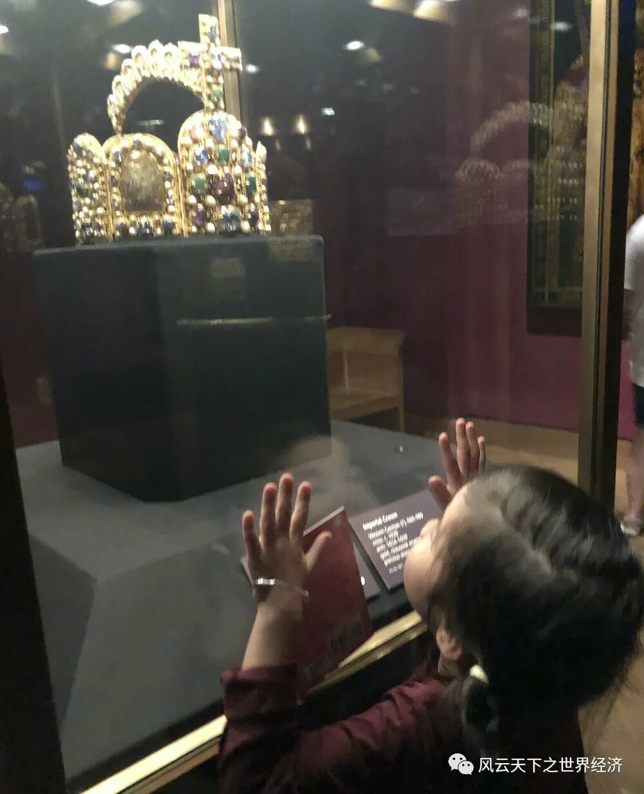
藏于霍夫堡宫的奥托一世皇冠
为了得到这顶象征着基督世界至高无上权力的皇冠，奥托一世奋斗了50年。从他公元912年出生于赞格豪森起，他就被这种奇诡的意识所召唤。因为在他出生的前一年（公元911年），丕平所开创的加洛林王朝寿终正寝。法兰克之王、罗马人的皇帝查理曼大帝所奏响的罗马余音，在德意志这片土地上永远画上了休止符。罗马皇帝再次成为每一个德意志公爵时而温习的旧梦。
幸运的是，奥托一世仅用了50年，就让这个罗马帝梦再次变成现实。当然，从马格德堡通向罗马圣彼得大教堂的路，也绝非坦途。
公元936年，奥托一世受封萨克森公爵，随后又在亚琛加冕成为东法兰克王国的国王；为他加冕的是美因茨大主教希尔德贝特以及来自特里尔和科隆的大主教。经过此次加冕，奥托一世的名字已经响彻莱茵河两岸的广大地区。为什么一定要是亚琛？因为查理曼大帝的故事并不遥远；对于善于征战、意志坚定的人来说，追随查理曼大帝的脚步仿佛就是使命的召唤。
然而，奥托一世并不满足已经得到的这些，因为这里毕竟不是罗马。公元951年，他决意朝着意大利的方向进发。意大利国王的铁王冠也最终戴到了奥托一世的头上，作为战利品的还包括国王遗孀阿德尔·海德。这个铁王冠尽管貌不惊人，但是在基督的世界里也非同小可。相传它是用当年钉死耶稣于十字架上的铁钉制成，这个铁王冠也透露了奥托一世的终极梦想——征服所有的基督教国家、做教皇的庇护者、做所有基督徒的共主。
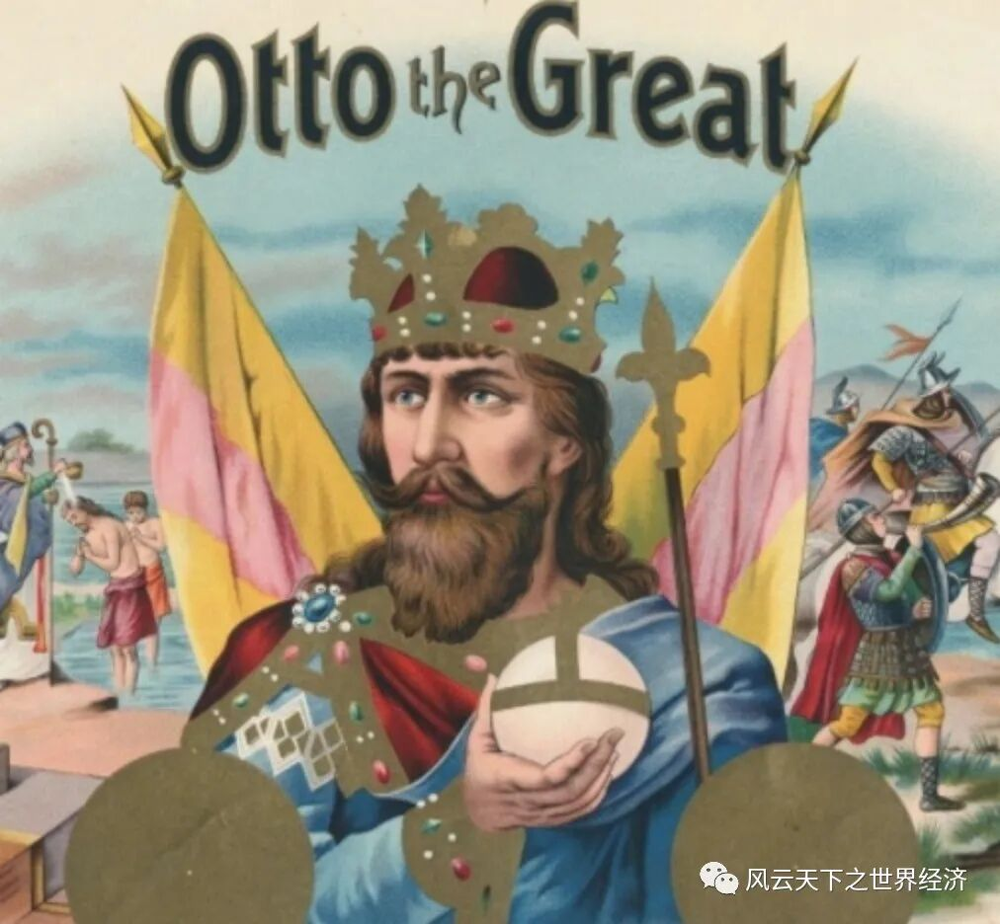
奥托一世 Otto the Great
公元962年2月2日，他做到了这一切。
虽然罗马的冬天异常寒冷，但当奥托一世骑马踏进这座曾经的万城之城的时候，他没有感到一丝寒意；此刻他的心中只有此行的终点——带有早期罗曼式风格的罗马圣彼得大教堂（现梵蒂冈圣彼得大教堂就是在此基础上由文艺复兴时期巴洛克艺术之父米开朗琪罗等艺术家重新设计的）。奥托一世的加冕之地，必定要是埋葬着耶稣使徒彼得的圣彼得大教堂，似乎只有这样才能比肩先祖查理，才能呼应开创欧洲中世纪新格局的伟大姓氏加洛林（Carolus）。他的身边除了随从和卫兵以外，还有他的第二任妻子——前意大利国王的遗孀阿德尔·海德。
即将要登上欧洲权力之巅的奥托一世骨骼饱满，垂及双肩的花白头发闪耀着锐气逼人的男性锋芒。这一天，他将把他的罗马皇帝梦托付给萨克森人的新盟友——教皇约翰内斯十二世。虽然这个20岁不到的俊美年轻人此刻正饱受罗马街头关于他桃色流言的困扰，但作为教皇，约翰内斯十二世将履行一个伟大的使命——为他挑选的这位基督世俗守护者奥托一世加冕，而他的名字也会因为这一刻而被永远地刻在圣殿的柱廊上。
神圣的弥撒盛大而绵长。但为了最后的高潮，一切等待都是值得的。在给奥托一世和海德涂上珍贵的圣油之后，约翰内斯十二世将罗马帝国皇帝的皇冠稳稳地戴在了奥托一世的头上。罗马人的奥古斯都重生了，只是这一次的皇帝是一个来自遥远之地萨克森的日耳曼人。
头戴罗马帝国皇冠的奥托一世，眼前闪过他曾经征战过的疆场，马扎尔人尸横遍野的图林根、还有法兰克公爵和洛林公爵嘴角阴险的笑容……
从此，被教皇加冕的奥托一世将会成为基督在世俗的代表，拱卫基督精神并守护整个欧洲，就像罗马帝国曾经做到的那样。
为了显示奥托的事业超越先人，“Holy”这个前缀首次加在了罗马的前面。伟大的罗马帝国在“神圣”中重生。
2. 当法兰克人成为罗马人
如果将时钟往回拨162年，罗马圣彼得大教堂早在公元800年的圣诞节，就首次目睹了后来还会在欧洲历史多次上演的一幕。教皇利奥三世为加洛林王朝的第二位国王——法兰克人查理加冕，自此查理的名字背后有了一个象征无上荣光的后缀“magne（曼）”。这个取自他的爷爷——墨洛温王朝宫相查理·马特的名字又有更进一步的非凡意义。
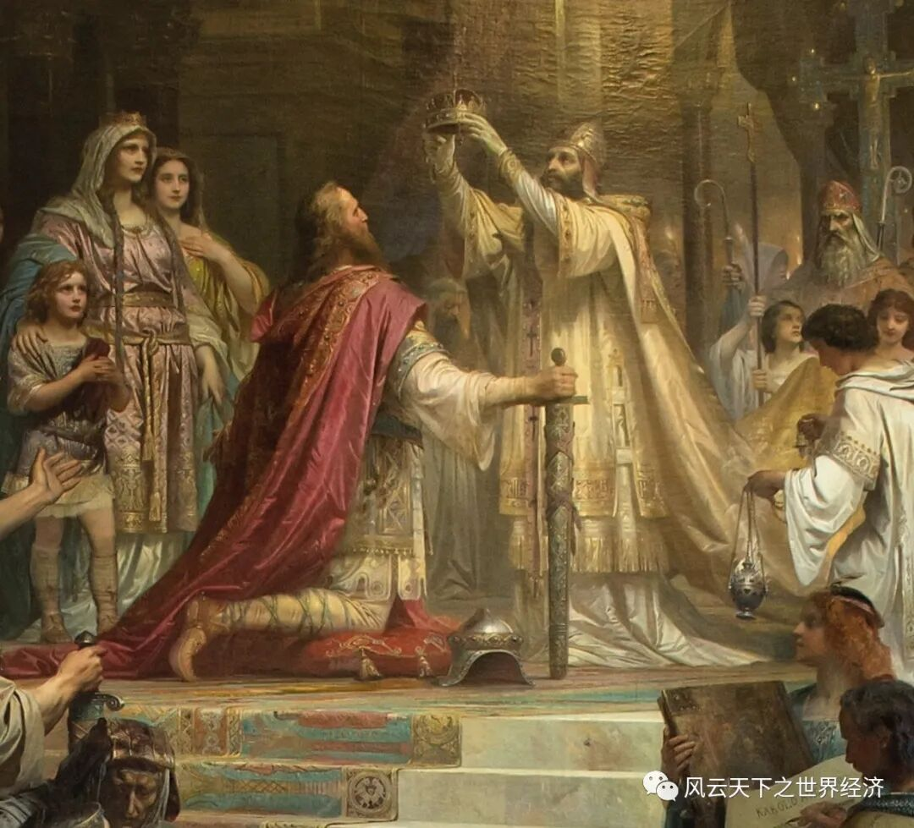
查理曼大帝加冕
就在加冕的那一刻，观礼的人群一阵骚动，旋即爆发雷鸣般的呼喊，激越如沸水。
——罗马又自由了，又成为世界的主人和中心了！
——查理·奥古斯都，神所加冕的伟大而赐予和平的皇帝万岁！永远胜利！
——生命和胜利，永远属于伟大上帝的受冕者，罗马人温和的皇帝查理·奥古斯都！
颂歌响彻圣彼得大教堂的穹顶，也让罗马人暂时忘却了自公元476年帝国崩塌以来的如鬼魅般挥之不去的恐惧。先后来自东方的匈奴人、阿瓦尔人和马札尔人；来自北方的维京人、来自西北部的萨克森人，来自南方的阿拉伯人，让数代罗马人在战栗中生活了整整400年。直到查理曼的到来才让他们噩梦方醒。
查理曼的功业自768年开始，他的戎马一生把加洛林王朝的疆土扩展到极致——他征服了德意志北部的萨克森人、打败了匈牙利的阿瓦尔人、吞并了意大利的伦巴第人王国、迫使穆斯林退回到了比利牛斯山脉以南。查理曼成为西方世界无可争辩的征服者。
凭借这份无与伦比的疆域，来自亚琛的查理曼大帝成为现代法国人、意大利人和德国人的共同祖先。
公元814年，当帝国伟业早已成为身后事，查理曼化身扑克牌中的红桃K，继续在后人的所创造的游戏中纵横捭阖。
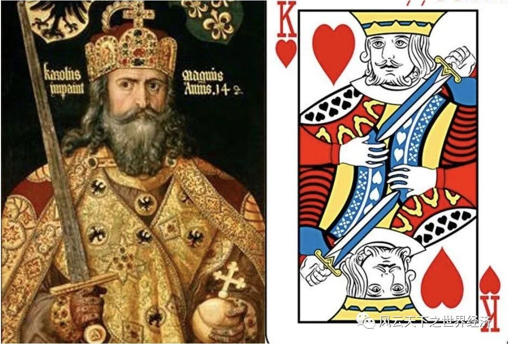
查理曼大帝变身红桃K
3. 当德意志人成为罗马人
在世界历史上，还有另外一个关于罗马的名字更加广为人知，那就是“德意志神圣罗马帝国”，而完成这一使命的是霍亨斯陶芬王朝的首位罗马人民的国王——腓特烈一世。
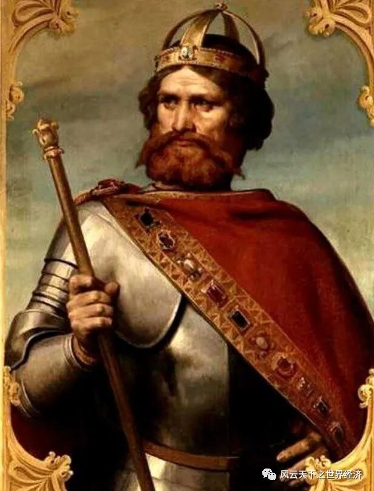
腓特烈一世
故事发生在公元1155年，地点仍然是罗马圣彼得大教堂，加冕人则换成了教宗阿德里安四世。
在这一天，罗马人的继承人终归德意志。
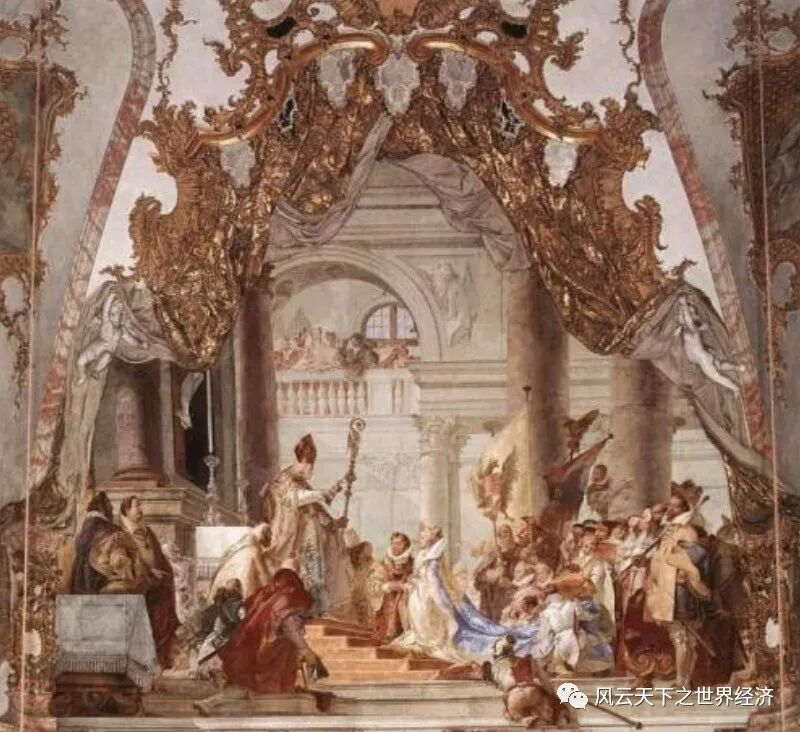
腓特烈一世加冕
腓特烈的一生戎马倥偬，1189年，已然67岁高龄的腓特烈一世仍然老骥伏枥，壮心不已。他将目光投向了基督徒的圣城耶路撒冷，此刻它还匍匐在穆斯林的铁蹄下。如果能够光复耶路撒冷，腓特烈一世的功业将会超越之前所有德意志帝王。
这次远征也因为汇集了欧洲中世纪最著名的三大君主，而成为九次十字军东征中最波澜壮阔的一次，其他两位分别是英格兰国王“狮心王”理查一世以及法国国王“狐狸”腓力二世。而腓特烈一世的对手也成色十足，他就是伊斯兰世界中的领袖萨拉丁大帝。
这一次远征也成为腓特烈一世的不归路。1190年6月10日一个酷热夏天的傍晚，德意志神圣罗马帝国的老皇帝在骑马渡过萨列法河时坠河溺亡。
他一生从未到达圣城。
腓特烈一世所开创的这份事业直到1806年才在拿破仑的炮火下寿终正寝，但是象征罗马的雄鹰标识却被德国国徽永久地保留下来，以昭示腓特烈一世的大地雄心。
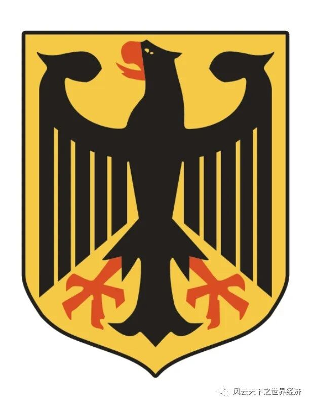
德国国徽
4. 当罗斯人成为罗马人
罗马人认为鹰是“朱庇特之鸟”，所以罗马军团所到之处必然鹰旗飘飘。公元330年，君士坦丁大帝将首都迁至前希腊殖民地拜占庭，象征罗马的鹰旗也在开始飘扬在小亚细亚的土地上。
公元11世纪，拜占庭皇帝科穆宁王朝伊萨克一世首次将原罗马帝国的单头鹰标志改为双头鹰。寓意恰如你所想，一只鹰代表罗马，而另外一只则代表拜占庭。虽然西罗马的故事在公元476年因为日耳曼蛮族的入侵而溘然弦断，但是在遥远的小亚细亚，这个故事的东方版本则一直讲述到了公元1453年。
此时，末代皇帝君士坦丁十一世的紫色龙袍已经变得风雨飘摇，几如风中之烛。尽管如此，为了攻陷这座付出君士坦丁大帝和查士丁尼大帝毕生努力的千年古城，奥斯曼帝国第7代苏丹默罕默德二世几乎动用了战神汉尼拔的智慧和毅力。这段惨烈故事被茨威格在《人类群星闪耀时》中完美记述，并称为“千年帝国的陷落”。
破城的那一刻，圣索菲亚大教堂直插云霄的十字架怀抱最后的基督苦难，从高处跌落尘埃，发出轰然巨响。
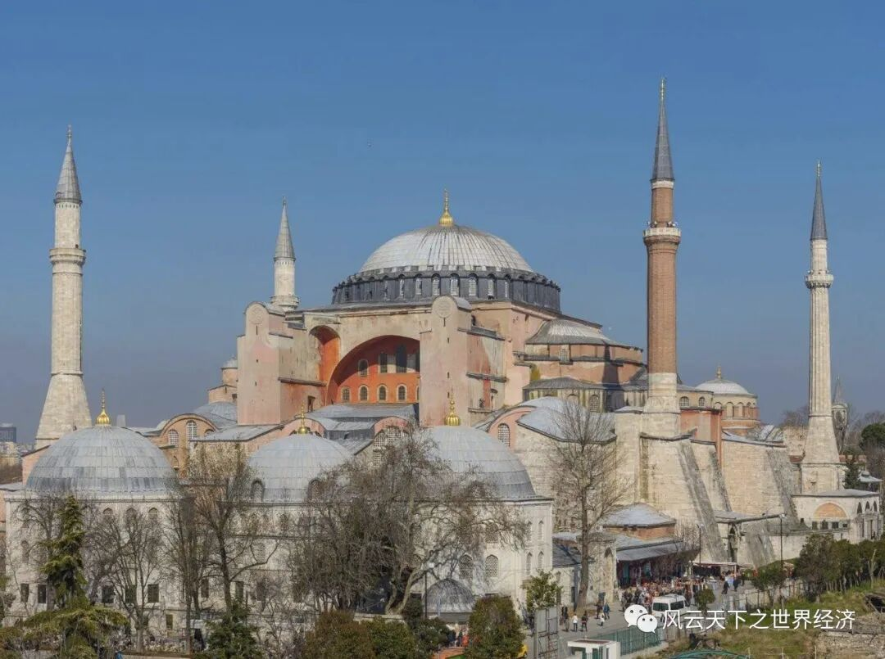
伊斯坦布尔圣索菲亚大教堂
两年以后，东罗马末代皇帝君士坦丁十一世的侄女在伯罗奔尼撒半岛出生。作为东罗马帝国唯一遗留人间的血脉，她被带到罗马抚养，并改名索菲亚·帕列奥罗格。17年后，她的命运将和一个叫做莫斯科大公国的遥远斯拉夫民族联结。
到伊凡三世时，莫斯科大公国的爵位已经传了12代。此时它们还仅仅是蒙古金帐汗国的藩属而已，每年需要向汗国纳贡以确认从属关系。这两百年来的耻辱一直深深刺痛着继位不久伊凡三世。
四十年来家国，三千里地山河。伊凡三世在继承大公后励精图治，终于在1502年彻底消灭了金帐汗国，并将其原有领土全部纳入莫斯科大公国。
雄图霸业让罗斯人在东西方的夹缝里获得了生存空间，这滋养了伊凡三世的野心，同时也让罗马教廷注意到了这支日渐崛起的东方势力。教皇保罗二世因此有了以联姻方式拯救基督教文明的最初构想。
1472年，时年17岁的索菲亚公主远嫁莫斯科，成为伊凡三世的第二任妻子。以莫斯科为首的罗斯诸邦正式皈依东正教，自称“第三罗马帝国”。这场婚姻让天主教和东正教在名义上重修旧好，基督教仿佛在一夜之间重新一统欧洲。
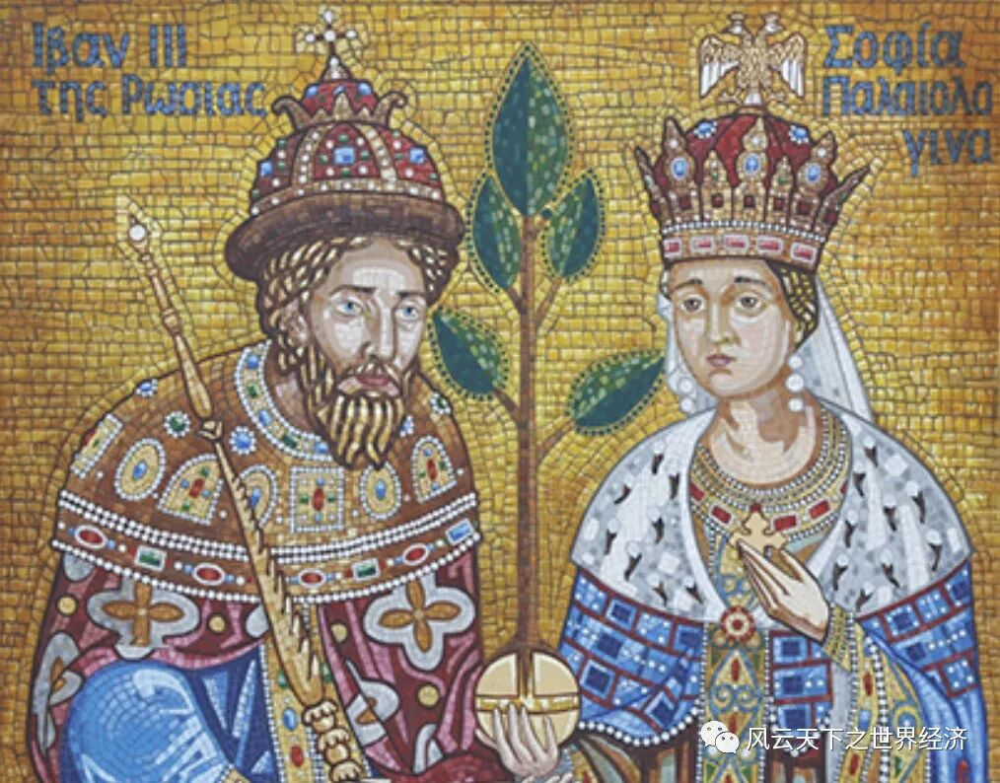
伊凡三世与索菲亚公主
索菲亚公主的到来，也将东正文化引入罗斯人的生活和思想中；在经过千年的精神放逐之后，意志坚强如铁的罗斯人终于重回人类文明中心。
公元1493年，东罗马帝国的双头鹰国徽第一次出现在了伊凡三世的国玺上。
1547年，伊凡三世和索菲亚公主的孙子伊凡四世正式加冕沙皇，而沙皇（Tsar）一词正是取自罗马人的精神领袖凯撒（Caesar），以显示自己对于罗马无可争议的继承人身份。从此，俄罗斯大公国成了沙皇俄国，统治这片世界上最大的疆域直到1917年，才最终被布尔什维克所掀起的红色浪潮所淹没。
时至今日，当看到俄罗斯国徽上的双头鹰标志、以及具有鲜明东正教建筑风格的克林姆林宫圣瓦西里大教堂时，你自不必讶异，因为他们正是拜占庭投在这片应许之地的东罗马帝国余晖。
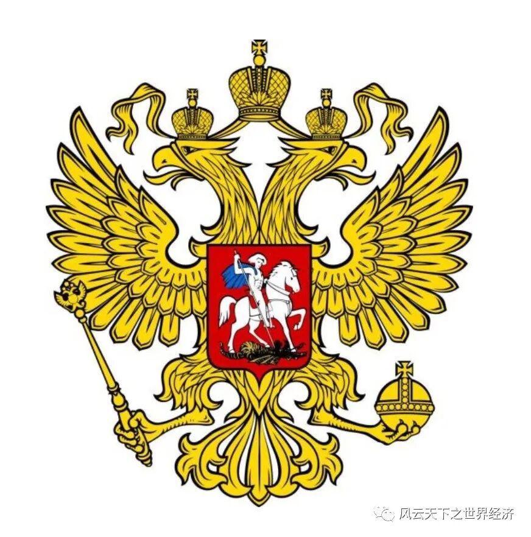
俄罗斯国徽
5. 还有多少人曾经梦回罗马
罗马无疑是欧洲人的精神图腾。
除了这些头戴象征罗马人皇帝的皇冠的君主，是否还有其人实现了这个伟大梦想呢？判定这一点首先需要一个标准，鉴于罗马帝国无可匹敌的广大疆域，能否将地中海变成统治疆域内的一个湖，似乎是一个比较客观的标准。
世界历史上完成这一壮举的有两个人，一个是法兰克人克洛维、一个是拜占庭人查士丁尼。
法兰克人是公元5世纪才从莱茵河下游移居高卢北部的，是罗马陷落后肆虐欧洲大地的蛮族中最不起眼的一个，直到墨洛温王朝建立时才在成欧洲诸蛮中崭露头角。公元5世纪，墨洛温最杰出的国王克洛维统一了法兰克、征服高卢、皈依罗马天主教，在帝国的废墟上几乎重建西罗马。
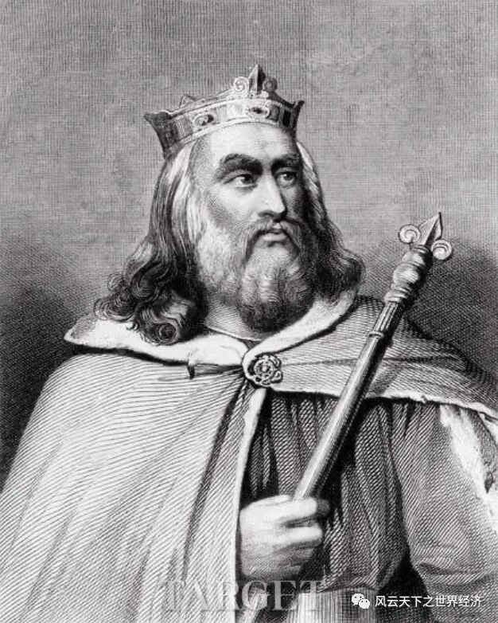
法兰克国王克洛维
自西罗马陷落后，东罗马本可以偏安一隅，在东西方的夹缝中传承帝国余脉。但是，偏有人不能接受这一点，他就是查士丁尼大帝。他在血统上虽是伊利里亚人，但是在感情深处依然寄予西方。收复西方领土、恢复原罗马帝国，成了他一生矢志不渝的追求，他希望“上帝将罗马人因怠惰而丧失的那片帝国领土授予我们”。
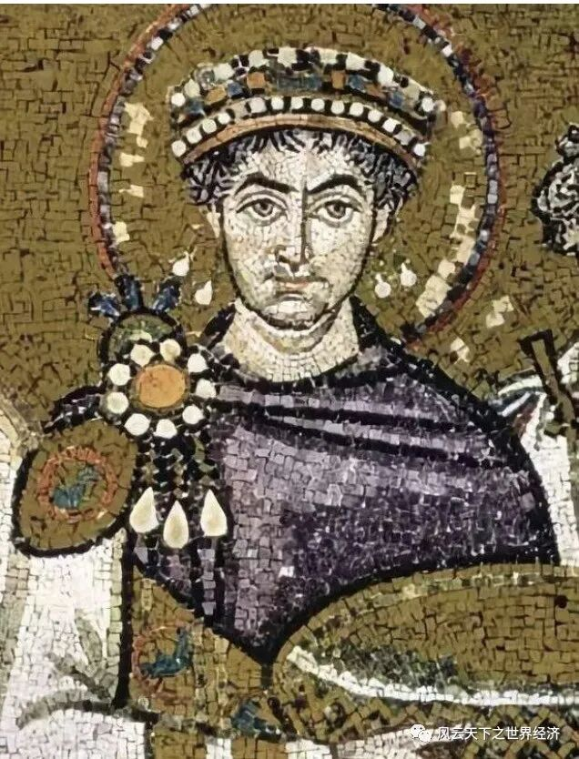
查士丁尼大帝
经过20年艰苦卓绝的战斗，他先后占领汪达尔人的北非、夺取西哥特人的西班牙、征服意大利的东哥特，地中海终于如愿成为拜占庭帝国的一个湖。
两位梦回罗马的欧洲人，除了旷世的雄心、他们还需要一点运气，因为历史其实只给了他们200年的时间。到公元7世纪，让欧洲人闻风丧胆的阿拉伯人将会出场，那时的地中海将会成为异教徒穆斯林的“私家湖泊”。
这些加冕或者未加冕的罗马拥趸，虽然来自不同的民族，但是这不妨碍他们有一个共同的特点：他们都不懂拉丁文。
如果我们放宽标准，其实这个“梦回罗马名单”还可以加上一长串现代国家的名字：奥地利、德国、俄罗斯、阿尔巴尼亚、罗马尼亚……
6. 丹尼尔之书的召唤
为什么这些雄主对于罗马帝国有着如此执念？是什么让这顶皇冠价值连城？为什么欧洲人执意要成为罗马人？答案就隐藏在《圣经》旧约的《丹尼尔之书》中。
丹尼尔之书
生活年代纵贯巴比伦和波斯两大帝国，先后成为巴比伦王尼布甲尼撒二世和波斯王居鲁士大帝谋士的犹太人丹尼尔，在公元前六世纪曾留下预言：“世上会出现四个统治西方的大帝国：巴比伦国、波斯国、亚历山大帝国以及他的继承者们的国家，之后世界将会灭亡。”
因此，要想让世界不灭亡，那就要让第四个帝国长久的延续下去。那么谁又是丹尼尔所预言的“亚历山大继承者的国家”呢？
亚历山大在公元前323年去世后，他留下的横跨欧亚的庞大帝国就被一分为三：马其顿、托勒密和塞琉西。除塞琉西后来分别被贵霜帝国和帕提亚帝国取代以外，剩下的部分几乎全部被鼎盛时期的罗马收入囊中。因此，罗马帝国就是亚历山大的继承者建立的帝国。
但是一个更致命的问题来了，世界上没有一个帝国可以永久的持续下去，那么是否人类就难逃覆灭的宿命呢？为了逃离这种令人绝望的悲情逻辑，基督徒们创造出一种脱困说辞：罗马帝国虽然不能永续，但是这个国家是“可转让的”，这样丹尼尔的“神谕”就演变成为一个“击鼓传花”的游戏——只要这种接力持续下去，基督徒的未来就有保障。此外，拥有罗马皇冠的君主便成为教会的世俗守护者，成为整个基督教的最高监管人。
因此，历史无处不罗马，一代人又一代人的故事让世界历史成了不停温习罗马章节的复习课。